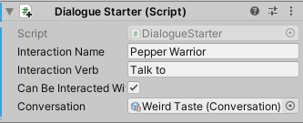

8 Scriptable Objects¶
In the previous chapter, you learned the basics of Unity’s user interface system and used the most common UI elements to create a title screen and a window. This knowledge will come in handy when completing the game with a flexible dialogue system that you’ll also be able to use in your own games with ease.
This chapter is all about giving the NPCs a way to talk to the player’s avatar and letting the player choose how to respond. This lets you add some personality to the characters.
The dialogue system you’ll create will teach you the basics of how to use scriptable objects to save conversations as files. This same concept will allow you to create items, weapons and settings presets as files for your own games. Scriptable objects are immensely powerful once you know how to use them, and they’ll make your game development journey a lot easier.
Dialogue user interface¶
Before diving into the concept of the dialogue system, there’s a new window you need to meet: the Dialogue Window. This GameObject is a child of Canvas in the Hierarchy and is disabled by default to hide it. Open the Chapter 8 Starter project in Unity and then open the Dining Hall scene in RW / Scenes. Then, expand the Canvas and select Dialogue Window. In the Inspector, click the checkbox in front of its name to make the window visible in both the Scene and Game views.
To get a good look at the different parts, fully expand and enable all of Dialogue Window’s children in the Hierarchy.
Take a look at the bottom of the Game view to see the Dialogue Window. The dialogue window might seem quite a bit more complex than what you’ve seen up until now, but it’s actually just made up of some images and text.
Here’s an overview:
- Speaker Tag and Speaker Text: The tag here is a dark image element that automatically resizes itself to the size of Speaker Text. Speaker Text is a text element that shows the name of the speaker — this can be “Guard” or “Potato guy,” for example. You can test this out by changing the text value of Speaker Text.
- Line Text: This is a text element that shows what the speaker is saying or asking.
- Option Selection Image and Answers: The white triangle on the left is an image that acts like a selection cursor. It can be moved to highlight the selection option. The two text elements are the possible answers when a question is asked. All of these UI elements will only be visible when a question is asked.
- Continue Indicator Image: This is an arrow image that blinks on and off via a small script. It’s used to indicate that the interact button can be pressed to advance the conversation.
Now that you know the different parts of the dialogue window, disable Option Selection Image and Answers again, followed by the Dialogue Window GameObject itself so it won’t be in the way. From now on, the different parts will be shown or hidden with scripting.
Dialogue manager overview¶
This brings you to the Dialogue Manager — it’s a child of the GameObject called Managers in the Hierarchy.
For now, this component only holds a bunch of references to the Player Avatar component, and all of the UI elements of the Dialogue Window. You’ll build upon this component to create the dialogue system in this chapter. Open its source code file in a code editor by double-clicking DialogueManager in the Script property. All of the variable declarations are at the top of the class:
public static DialogueManager Instance;
// Player input
public PlayerAvatar playerAvatar;
private PlayerInput playerInput;
...
// Conversation
Most of these are references to components, but the first one is an exception. The Instance variable is public static and stores an instance of the DialogueManagerclass itself. It’s paired with this code in the Awake method:
if (Instance == null)
{
Instance = this;
}
This makes sure the value of Instance is set to an instance of the DialogueManager class as soon as the script starts. This is called the Singleton pattern, and it allows you to call methods and access public variables on the DialogueManager component from anywhere by using the Instance variable. It will prove very useful later on to let NPCs call on the DialogueManager when starting a conversation.
The DialogueManager script also contains some empty Interact and Move methods to be able to react to the player’s input; you’ll add the logic to these once the rest of the dialogue system gets going.
Now, return to the Unity editor. It’s time to create the dialogue system itself!
Creating a dialogue system¶
A dialogue system in video games can assume many forms, but in essence it allows you to speak with characters and make a choice now and then. Think of old school RPGs like EarthBound, Secret of Mana or Breath of Fire — they all allow you to walk around and talk to the people (and creatures) around you.
Some games like visual novels and Choose Your Own Adventure games are entirely based upon having conversations and making meaningful choices.
In Veggie Gladiators, you can walk around the dining hall and talk to the other gladiators once you get near them — just like how you could open the treasure chest in the previous chapter. The first step of the dialogue system will have NPCs with a Dialogue Starter component that holds a reference to a conversation file. A conversation has one or more lines of dialogue. Each line has a speaker name and the text the speaker is saying. When the player avatar tries to interact with a dialogue starter, this will trigger the Dialogue Manager to parse the conversation file and update the UI for it. These UI changes are done by modifying the UI elements of the Dialogue Window.
The logical order to create and edit the classes and components for this system is as follows:
- The DialogueLine: A class that holds a single line of dialogue.
- A Conversation: A scriptable object that will have a list of dialogue lines.
- The Dialogue Starter: A component that has a reference to a conversation and can be talked to by the player avatar.
- The Dialogue Manager: This needs to be aware of dialogue starters and conversations and needs to allow the conversation to progress.
Get ready for some scripting action!
Lines of dialogue¶
The first order of business is to create the DialogueLine class, which holds the data for a single line of dialogue. Create a new C# script named DialogueLine in RW / Scripts / Dialogueand open it in your code editor. Unity’s default script template will make this yet another class that derives from MonoBehaviour to become a component. DialogueLine shouldn’t be a component, though, but a simple class that holds some variables instead.
To stop deriving from MonoBehaviour, remove : MonoBehaviour from the class declaration line. While you’re at it, strip away the Start and Update methods. You should now have a clean class to work with:
public class DialogueLine
{
}
Next, remove these lines from the top of the script:
using System.Collections;
using System.Collections.Generic;
Replace them with this:
using System;
The System namespace is necessary for the next part. Add this right above public class DialogueLine:
[Serializable]
A class in square brackets above a class or a variable is an attribute. In the case of Serializable, this attribute makes the DialogueLine class serializable, which means instances of the class can be saved to and loaded from a disk or memory. By making the class serializable, Unity can process the data and show it in the Inspector. The Serializableattribute is a part of the System namespace.
Now, add these lines inside the DialogueLine class:
public string speaker; // 1
[TextArea(2, 3)] // 2
public string text; // 3
Here’s a quick overview:
- This is the name of the speaker.
- This property attribute will make the string defined below it editable in a big text area with a scrollbar in the Inspector. Unity comes with a bunch of property attributes that can make your life a lot easier, so be sure to check out the Unity Scripting Reference. You can find all attributes in the UnityEngine ▸ Attributes section.
- The line(s) of text the speaker will say.
Save this script and return to the Unity editor. The DialogueLine class won’t do much by itself. Unlike a component, it can’t be added to a GameObject; it needs to be part of a conversation.
Conversations¶
A basic conversation is a simple list of dialogue lines with one or more speakers that will play one line after the other like a movie script.
To create a list of dialogue lines, you could create a component with a list of DialogueLinevariables, add that component to every NPC and call it a day. That would become unwieldy pretty fast though, because you’d have to hunt down the correct NPC in the Hierarchy for every little change you want to make.
To make the situation even worse, if you ever decide you want to let others translate the dialogues, you’d have to painstakingly copy and paste the text from every NPC and keep track of it somewhere.
Writing scriptable objects¶
There’s a far better alternative for storing data in a central location, and it’s built right into Unity: scriptable objects! You can use a scriptable object as a data container and store it as an asset, like an image or a sound effect. You can then reference the scriptable object in a component and read its contents. As a bonus, you can edit its properties right in the Inspector like components and the asset files are easily edited in a text editor. Yes, scriptable objects are truly marvelous, and you should use them when you can.
Here are some use cases for scriptable objects to spark your imagination:
- Store the inventory of an in-game store in a scriptable object, then have a shop component reference the inventory asset.
- Store the stats of enemies — like health, strength and defense — as separate assets in a central location.
- Use empty
Elementscriptable objects for storing elements like fire, ice and lightning. Now you can slot these in on objects in the world to set weaknesses and resistances.
Now that you know what a scriptable object is, it’s time to create your own. Create a new C# script in the RW / Scripts / Dialogue folder, name it Conversation and open it in your favorite code editor.
This script isn’t a component, so you’ll need to remove everything MonoBehaviour-related. To do that, remove the Start and Update methods and replace MonoBehaviour with ScriptableObject. Next, add this line inside of the class:
public DialogueLine[] dialogueLines;
This is the array of dialogue lines you’ll be able to populate via the Inspector. The complete class now looks like this:
public class Conversation : ScriptableObject
{
public DialogueLine[] dialogueLines;
}
This is a complete scriptable object, but there’s no way to create an asset out of it in the editor. To do that, add a special attribute right above public class Conversation : ScriptableObject:
[CreateAssetMenu(fileName = "Conversation", menuName = "Dialogue/Conversation", order = 1)]
This attribute will add a Dialogue ▸ Conversation entry to the Create menu of the Unity editor that will create a Conversation asset in a folder of your choice. Save this script and return to the editor to give that a shot.
Creating scriptable objects¶
Create a new folder in the RW folder named Conversations, and right-click on the new folder. Next, select Create ▸ Dialogue ▸ Conversation to create a new conversation, and name it Weird Taste.
Now take a look at the Inspector, and you’ll see an empty list of dialogue lines. Click the +button at the bottom right to create your first line of dialogue.
As you can see, you can easily create new lines of dialogue this way. Change the value of Speaker to Pepper Warrior and add the following text: “Don’t you think the food here has a weird taste to it?” Next, add another line of dialogue by clicking the + button again. This will duplicate the line you added last. Change Text to “It’s familiar to me, but I can’t put my finger on it…”
With the first conversation safely stored as an asset, it’s time to give the NPCs a way to use this dialogue.
Dialogue starter component¶
To make the NPCs interactable, you’ll use the interaction system. You learned about this in the previous chapter, but here’s a quick refresher:
- There’s an Interaction System component attached to the Player Avatar.
- This system checks for GameObjects on the Interaction layer with a component that derives from the abstract
InteractableObjectclass in front of the avatar. - If the player triggers the Interact input action by pressing Space for example, the interaction system will attempt to interact with the nearest interactable object.
This means you’ll need to create a script that derives from InteractableObject and attach that to all NPCs you want to be able to talk with.
Create a new C# script named DialogueStarter in the RW / Scripts / Dialogue folder and open it in a code editor.
The basic version of this script will need to meet the following requirements:
- The class should derive from
InteractableObjectso it works with the interaction system. - It needs a reference to a Conversation asset so the NPC will know what to say.
- It should have a way to start the conversation.
With this in mind, remove both the Start and Update methods and replace MonoBehaviour with InteractableObject. This will be the end result:
public class DialogueStarter : InteractableObject
{
}
You’ll get an error saying that the Interact method hasn’t been implemented yet. That’s because the InteractableObject class is abstract and it has an abstract method called Interact — which means all classes that inherit from InteractableObject are required to provide their own implementation of this method. Most code editors will give you the option to automatically implement abstract classes, which will add any missing method overrides.
Of course, you can always choose to do so manually by adding the following method to DialogueStarter:
public override void Interact(PlayerAvatar playerAvatar)
{
}
This interaction system will call this method when the avatar interacts with the dialogue starter, so this method will start a conversation. To add a reference to the conversation, add this variable declaration right above the Interact method:
public Conversation conversation;
This allows you to add a reference to a Conversation asset via the Inspector once you’re back in the editor.
Remember that to work with the interaction system, the GameObject needs to be on the Interaction layer. While you can set this up manually for every interactable object in the editor, it’s easy to forget to do this — resulting in you frantically searching around for what’s wrong. Luckily, there’s a way to set a layer automatically via scripting. Add this Awakemethod above the Interact method:
private void Awake()
{
gameObject.layer = LayerMask.NameToLayer("Interaction");
}
This piece of code changes the layer of the GameObject the component is attached to. gameObject.layer is the current layer, and LayerMask.NameToLayer gets the ID of the Interaction layer by its name. By adding this code, you’ll never have to worry about setting the layer correctly again!
The Interact method won’t be able to let the NPC talk yet, as it depends on the dialogue manager being able to start a conversation. That doesn’t mean you can’t test DialogueStarter out already, though. Add the following code to the Interact method:
foreach (var line in conversation.dialogueLines)
{
print(line.speaker + " : " + line.text);
}
Whenever an NPC and the avatar interact, this will iterate over the dialogue lines in the conversation asset and print out the speaker and the line of text to the console for each line of dialogue. This isn’t fancy, but it’s more than good enough for now.
Save the script and return to the Unity editor.
Next, add a dialogue starter to the Pepper Warrior sitting at the table next to the avatar’s starting location. To do this, start by selecting the last Pepper Warrior in the Hierarchy. It’s in Interactable / NPCs.

Then, add a Dialogue Starter component to it, set its Interaction Name to Pepper Warrior and set its Interaction Verb to Talk to. Finally, set the value of its Conversation property to Weird Taste by using the selection button.

Play the scene and approach the Pepper Warrior on the right. The interaction window will pop up and show “Talk to Pepper Warrior.”
Now, press Space to start a conversation. It will appear as if nothing happened, but if you take a look at the Console window (Window ▸ General ▸ Console), the dialogue lines of the conversation you set up earlier are visible — which means everything is working fine!
Next, you’ll focus on making the dialogue system a lot more sophisticated.
Improving the dialogue manager¶
The Dialogue Manager serves three purposes:
- It parses each dialogue line of a conversation.
- It makes the conversation visible by passing the lines of dialogue to the Dialogue Window.
- It allows the player to move the conversation along.
Right now, the Dialogue Manager component can’t do any of this yet — so that means it’s scripting time! Open RW / Scripts / Dialogue / DialogueManager in a code editor to start improving it.
Starting a conversation¶
The first order of business is to add these variables below the // Conversation comment, above the Awake method:
private Conversation activeConversation; // 1
private int dialogueIndex; // 2
private DialogueStarter dialogueStarter; // 3
Here’s what these will be used for:
- This is a reference to a Conversation asset from which the script will read the dialogue lines.
- The index, or the number, of the current dialogue line. For example, an index of 0 means the first line of the conversation, while an index of 5 means the sixth line.
- A reference to the dialogue starter that called the Dialogue Manager. The script uses this reference to signal the dialogue starter that the conversation has ended.
Now, add the ShowTextUI method below Move:
private void ShowTextUI()
{
answersParent.SetActive(false); // 1
optionSelector.gameObject.SetActive(false); // 2
continueIndicator.SetActive(true); // 3
}
As its name implies, this method shows the UI elements needed for displaying lines of dialogue. The dialogue window also supports questions — but since you don’t have any questions yet, those UI elements get disabled:
- Disable the GameObject that holds the UI elements for answering questions.
- Disable the options selector cursor.
- Show the triangular indicator at the bottom right of the window.
The next step is to add a way of showing a single line of dialogue. To do this, add the ShowLine method to the bottom of the class:
private void ShowLine()
{
DialogueLine currentLine =
activeConversation.dialogueLines[dialogueIndex]; // 1
speakerText.text = currentLine.speaker; // 2
lineText.text = currentLine.text; // 3
ShowTextUI(); // 4
}
This method will update the Text UI elements of the dialogue window to show the contents of the active dialogue line. In more detail:
- Get the current line of dialogue from the conversation and store it in
currentLine. - Change the speaker text to show the name of the speaker found in
currentLine. - Do the same for the text the speaker is saying.
- Call
ShowTextUIto make sure the relevant UI elements are visible.
Continue by adding this:
private void SetDialogueWindowVisibility(bool visible)
{
dialogueWindow.SetActive(visible);
}
This method will be called to toggle the visibility of the dialogue window.
Next up is the most important method — the one that actually starts the conversation. Add this below SetDialogueWindowVisibility:
public void StartConversation(Conversation conversation,
DialogueStarter dialogueStarter) // 1
{
playerAvatar.DisableInput(); // 2
activeConversation = conversation; // 3
this.dialogueStarter = dialogueStarter; // 4
dialogueIndex = 0; // 5
SetDialogueWindowVisibility(true); // 6
ShowLine(); // 7
playerInput.enabled = true; // 8
}
This might look like a complex piece of code, but most of it is the set up and resetting of variables to start a fresh conversation:
- The
StartConversationmethod takes two arguments: aConversationasset and aDialogueStartercomponent. The references to these will be stored in the variables you added earlier. - This stops the player avatar from being able to move and interact with the scene. It would be kind of awkward if the player avatar walked away in the middle of a conversation, right?
- Store the conversation in
activeConversationfor use throughout the script. - Save a reference to the dialogue starter for later use. The
thiskeyword before the equal sign is necessary to clarify that thedialogueStarteron the left is the local variable, while thedialogueStarteron the right is the argument from the method. - Reset the dialogue index to the first line of dialogue.
- Show the dialogue window.
- Show the first line of dialogue.
- Enable the Player Input component attached to the Dialogue Manager. Like the Player Avatar, the Dialogue Manager has its own Player Input component that calls the
MoveandInteractmethods.
With this method added, it’s time to test if starting a new conversation works as intended. Save this script and open the DialogueStarter script. Replace the foreach loop in the Interact method with this:
DialogueManager.Instance.StartConversation(conversation, this); // 1
canBeInteractedWith = false; // 2
Instead of simply writing the dialogue lines to the console, interacting with a dialogue starter will now:
- Call
StartConversationon the Dialogue Manager and start a new conversation by passing the dialog starter’s conversation and the dialogue starter itself. - Don’t allow interactions with the dialogue starter from now on.
Save this script as well and return to the Unity editor. Play the scene and walk up to the Pepper Warrior at the table on your right again to have a chat. This time, the dialogue window will show up and show the first dialogue line of the conversation.
Awesome! There’s still a part missing, of course, because there’s no way to show the next line of dialogue, but this is already quite impressive.
Showing more lines of dialogue and ending a conversation¶
First, the avatar must be able to interact with the dialogue starter again once it’s done talking. To achieve that, open the DialogueStarter script again from RW / Scripts / Dialogueand add the following method below Interact:
public void OnConversationEnd()
{
canBeInteractedWith = true;
}
This re-enables interactions and will be called by the Dialogue Manager once a conversation ends. Now, save this script and open the Dialogue Manager script again.
Add the following code to the bottom of the class:
public void EndConversation()
{
playerInput.enabled = false; // 1
playerAvatar.EnableInput(); // 2
activeConversation = null; // 3
SetDialogueWindowVisibility(false); // 4
dialogueStarter.OnConversationEnd(); // 5
}
This method makes sure everything is reset to the way it was before the conversation started. Here’s what you’re doing in greater detail:
- Disable the Player Input component on the Dialogue Manager.
- Re-enable the input of the Player Avatar.
- Clear the conversation from the Dialogue Manager by setting its value to
null. - Hide the dialogue window.
- Call
OnConversationEndon the dialogue starter so it can be interacted with again.
The method that moves the conversation forward is next. Add this below EndConversation:
private void NormalTextInteract(DialogueLine currentLine) // 1
{
dialogueIndex++; // 2
if (activeConversation.dialogueLines.Length > dialogueIndex) // 3
{
ShowLine();
}
else
{
EndConversation();
}
}
This advances a conversation by incrementing the index of the active dialogue line, and then proceeds to check if there are more lines left. If there are, the next line is shown. If there are no more lines, the conversation ends. Here’s how this is achieved:
- The method takes a single dialogue line as an argument — which you’ll use soon.
- Increment
dialogueIndexby 1. - Check if there’s a dialogue line left at this index. If there is, show the next line. If not, end the conversation.
Finally, you’ll expand upon the Interact method to make it load new lines of dialogue. Add the following code to the Interact method:
if (!activeConversation || !context.performed) // 1
{
return;
}
DialogueLine currentLine =
activeConversation.dialogueLines[dialogueIndex]; // 2
NormalTextInteract(currentLine); // 3
Here’s a rundown of what you’re doing:
- If there’s no conversation loaded or the action wasn’t fully performed — in other words, pressing a key or a button down and releasing it — don’t do anything.
- Load the current dialogue line into
currentLine. - Call
NormalTextInteractto actually show the line if there is one or end the conversation.
With these last lines, the Dialogue Manager is complete! Save the script and return to the Unity editor for another test run. Talk to the Pepper Warrior at the table once more and press the Space key to advance the conversation.
With everything in place, you’ll see the next line of dialogue after the first key press and the conversation will end after the second press.

All that’s left is to create more conversation assets and assign them to the NPCs in the scene. You can make the vegetable warriors funny, serious or even angry. It’s all up to you! Take a look at the final project to get some ideas for the different NPCs.
To make the dialogue system even better, you can add question handling for a more interactive experience. Keep reading to learn how to do that.
Handling questions¶
Now that you can let the characters talk to the player avatar, it might be interesting if they can ask questions as well. This makes the conversations feel more dynamic and interesting. Every line of dialogue will have the option of becoming a question, which will prompt the player for two possible answers. Each of these answers will be linked to a different conversation asset that will be loaded by the Dialogue Manager.
By doing this, you can have long talks with NPCs that are split up in multiple conversation files.
ConversationOk, suit yourself.ConversationDon’t eat the soup.I think it’s dodgy.ConversationHello!Do you want advice?No.Yes!
For this to work, you’ll need to expand upon the existing dialogue system.
Dialogue question class¶
First, create a new C# script in the RW / Scripts / Dialogue folder and name it DialogueQuestion. Open the new file in a code editor and remove both the Start and Update methods. This will be another serializable class like DialogueLine, so replace the class declaration line with this:
public class DialogueQuestion
Next, remove all of the using directives at the top and replace them with this:
using System;
These two changes make it so DialogueQuestion is no longer a MonoBehaviour, but a regular class instead. It also makes common attributes accessible in this file. Now, make the class serializable by adding the Serializable attribute right above the class declaration:
[Serializable]
This will allow Unity to serialize the class — making instances of it editable in the editor.
Finally, add these variable declarations to the class:
// 1
public string firstOption;
public string secondOption;
// 2
public Conversation conversationWhenFirstOptionWasSelected;
public Conversation conversationWhenSecondOptionWasSelected;
Here’s what these will be used for:
- These are the possible answers to the question. For example, the first option might be “Yes” and the second one “No.” The question itself will be asked via
DialogueLine’stextvariable. - References to the conversations that need to be activated depending on the answer that was given. The Dialogue Manager should activate
conversationWhenFirstOptionWasSelectedwhen the first answer is selected, for example.
Now, save this script and open the DialogueLine script. It needs extra variables to make use of the new DialogueQuestion class you just made, so add these below text:
public bool thisIsAQuestion; // 1
public DialogueQuestion dialogueQuestion; // 2
Here’s a summary of their purpose:
- This is a flag to let the Dialogue Manager know whether this line of dialogue needs to be handled as a question.
- Information about the question, like the possible answers and what conversations they will start.
Save this script and return to the editor. Everything is now in place to start creating conversations with questions.
Setting up the editor for questions¶
The boss of this place is standing before the huge wooden door at the back. She’s going to ask the player avatar whether he’s ready to enter the arena. The player will then have the choice of answering yes or no, which will trigger another conversation. In other words, you’ll need to create three conversations for the boss.
Create a new conversation in RW / Conversations and name it Boss. Now create two more conversations and name them Boss - End and Boss - Not Ready.

Select the Boss conversation and add a new dialogue line. Notice that there’s a new checkbox now labelled This Is A Question and a property named Dialogue Question that can be expanded.
Change the value of Speaker to Boss and add “Hail warrior! Are you ready to enter the arena?” to the Text property. Now check the This Is A Question checkbox and expand the Dialogue Question property. Next, set the value of First Option to “Yes! (exit the dining hall)”and change Second Option to “Not yet.”
As a final step, drag the Boss - End conversation to the first Conversation property and drag Boss - Not Ready to the second one.
When the player chooses the first option (yes), the Boss - End conversation should be loaded. Likewise, when the player chooses the second option (no), the Boss - Not Readyconversation will start. Pretty straightforward!
Now, select Boss - End, add a dialogue line and set its Speaker to Boss and change its Text to “Great! Step right through.” Next, select Boss - Not Ready, and change its Speaker to Bossand Text to “Alright, take your time.”
The conversations are ready, but the Boss NPC still needs a Dialogue Starter component. Select Interactable / NPCs / Boss in the Hierarchy and add a Dialogue Starter component to it. Change its Interaction Name to Boss and change the Interaction Verb to Talk to. To complete the Dialogue Starter, drag the Boss conversation to the Conversation property.

Now the avatar can go and talk to the boss lady at the back, but you won’t be able to make a choice yet. All it will do is ask a question and abruptly end the conversation.
To create a realistic interaction, you’ll need to do some final scripting.
Preparing the dialogue manager for questions¶
The dialogue manager can’t differentiate between statements and questions at the moment, so it’s up to you to make it smarter. This involves some more scripting, of course, so open the DialogueManager script from RW / Scripts / Dialogue in your code editor once more.
First, add this new variable below private DialogueStarter dialogueStarter;:
private bool firstOptionSelected;
This variable will keep track of which option is selected. Then, add the following new method below the others:
private IEnumerator UpdateOptionSelectorPostion() // 1
{
yield return new WaitForEndOfFrame(); // 2
if (firstOptionSelected) // 3
{
optionSelector.position =
new Vector3(optionSelector.position.x,
firstOption.GetComponent<RectTransform>().position.y, optionSelector.position.z);
}
else
{
optionSelector.position =
new Vector3(optionSelector.position.x,
secondOption.GetComponent<RectTransform>().position.y, optionSelector.position.z);
}
}
Here’s what’s happening:
- This method is actually a coroutine, as it returns an
IEnumeratorinstead of avoid. A coroutine is a method that can spread its execution over multiple frames. More on coroutines in Chapter 11! - Wait to execute the following lines until the end of the frame. This gives the dialogue window a frame to settle so the correct positions of the options can be read. If you were to start to move the cursor immediately, it would appear at the wrong location because the text UI elements of the answers wouldn’t be fully loaded yet.
- This if-statement decides whether the option selection cursor should be moved next to the first or second options depending on the value of
firstOptionSelected. A value oftruewill move the cursor next to the first-option text.
Next, add this method to show the question UI elements:
private void ShowQuestionUI(DialogueLine currentLine) // 1
{
answersParent.SetActive(true); // 2
continueIndicator.SetActive(false); // 3
optionSelector.gameObject.SetActive(true); // 4
firstOption.text = currentLine.dialogueQuestion.firstOption; // 5
secondOption.text = currentLine.dialogueQuestion.secondOption; // 6
firstOptionSelected = true; // 7
StartCoroutine(UpdateOptionSelectorPostion()); // 8
}
This basically activates the relevant UI elements for answering questions and makes sure the position of the selection cursor is reset:
- The
ShowQuestionUImethod takes a singleDialogueLineas an argument to read the options from. - Show the GameObject that holds the answer text UI elements.
- Hide the continue indicator at the bottom right.
- Show the option selection cursor.
- Set the first-option text to the first option found in the dialogue line.
- Do the same for the second option.
- Set the first option as the default.
- Move the option selector cursor via a coroutine. This allows
UpdateOptionSelectorPostionto wait a frame before moving the cursor.
Now the UI can be loaded correctly. Replace the following line in ShowLine:
ShowTextUI();
With this if statement:
if (!currentLine.thisIsAQuestion) // 1
{
ShowTextUI();
}
else // 2
{
ShowQuestionUI(currentLine);
}
This checks if the current dialogue line is a question before deciding which version of the UI to show:
- If the current line isn’t a question, show the regular text UI.
- If the line is a question, show the question UI and pass the current dialogue line.
Almost there!
The Interact method calls NormalTextInteract — which is fine for regular text, but not for questions. That would just skip the question altogether and attempt to move to the next line of dialogue. To correct this, add this new flavor of the dialogue interaction method:
private void QuestionInteract(DialogueLine currentLine) // 1
{
if (firstOptionSelected) // 2
{
StartConversation(currentLine.dialogueQuestion.conversationWhenFirstOptionWasSelected, dialogueStarter);
}
else // 3
{
StartConversation(currentLine.dialogueQuestion.conversationWhenSecondOptionWasSelected, dialogueStarter);
}
}
Instead of trying to load the next line or end the conversation, this method checks which option is selected and loads a new conversation based on the choice:
- This method accepts a single
DialogueLineas an argument, which it uses to get a reference to the next conversation to load. - If the first option is selected, start the conversation linked to that option.
- Do the same for the second option if it’s selected.
Now the Interact method will also need some modification to use the QuestionInteractmethod. Replace the following line:
NormalTextInteract(currentLine);
With these:
if (!currentLine.thisIsAQuestion)
{
NormalTextInteract(currentLine);
}
else
{
QuestionInteract(currentLine);
}
This if statement checks whether the current line is a question or not. If it’s not a question, NormalTextInteract is called. If the current line of dialogue is a question, QuestionInteract is called instead.
Finally, there’s one more method to take a look at: Move. This method is called whenever the movement keys are pressed or buttons are clicked. Since there are only two options to choose from, every move action means switching between the first and the second option, which is stored in the firstOptionSelected variable. To add this switching logic, add the following code to Move:
if (activeConversation != null && context.performed) // 1
{
DialogueLine currentLine =
activeConversation.dialogueLines[dialogueIndex]; // 2
if (currentLine.thisIsAQuestion) // 3
{
firstOptionSelected = !firstOptionSelected;
StartCoroutine(UpdateOptionSelectorPostion());
}
}
Here’s what’s going on:
- If there’s a conversation loaded and the move action was performed by pressing and releasing a key, continue running the code.
- Get the current line of dialogue.
- If the current line of dialogue is a question, switch the value of
firstOptionSelected. This is done by inverting the current value offirstOptionSelectedby using an exclamation mark before the original value. With this,truebecomesfalseand vice versa. Next, update the position of the selection cursor to reflect this change.
That concludes the scripting for the dialogue system. Save the script and pat yourself on the back. You deserve it! Now, return to the editor, play the scene and talk to the boss at the back again.
You’ll get two options to choose from, and pressing the Space key will continue your chat by loading another conversation asset.
Congratulations on finishing this chapter! You’ll be able to create a visual novel or another story-based game with all that you’ve learned up to this point. You can take your skills to the next level with the next chapter — you’ll learn how to use artificial intelligence and pathfinding to make your in-game friends and foes smarter.
Key points¶
- A dialogue system allows you to speak with (non-playable) characters and make choices.
- Variables from regular classes can be edited in the Unity editor by marking them serializable using the
[Serializable]attribute. - Instances of serializable classes can be saved to and loaded from a disk or memory.
- Unity comes with a lot of built-in property attributes to help display your components the way you want to in the Inspector. A good example is
[TextArea], which creates a multiline text field for a string variable. - You can use a scriptable object as a data container and store it as an asset.
- Use the
[CreateAssetMenu]attribute on scriptable object scripts to add them to the Create menu in the editor. - Use
LayerMask.NameToLayer("layer name")to get the ID of a layer. - Test your scripts along the way by using
print()to make sure what you have up until that point works. - A coroutine is a method that can spread its execution over multiple frames.